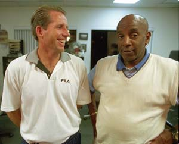
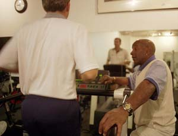
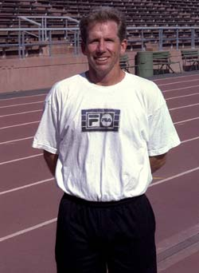

Previous: Rhythm and Rally Speed | 🏠 Classic Lessons Home | Next: Secrets of Spanish Footwork
Running Skills and Your Game
Comprehensive unified tennis knowledge base — Fundamentals, Stroke Analysis, Reference Library, and more
Running Skills and Your Game
By Kerry Mitchell
Trainers rarely talk about it, but improving your technical running could lead to a huge improvement in your game.
As a competitive tournament player, improving my running skills has been the source of the greatest improvement in my tennis over the last 5 years. Although there are obviously many areas of the game in which I feel players can improve (see Private Lessons with Kerry Mitchell), the changes I made in my running skills have done the most to help me achieve my own tennis goals.
Although there are many great articles about tennis conditioning, this is the first article I have seen in which the focus is actual running technique. The changes I made in my technical running led directly to improvement in my competitive results. My hope is that telling my story and passing along some of the information that I received in the process will also help others achieve their tennis goals.
When I started playing tennis as a teenager the idea of improved physical fitness to accentuate tennis performance was just evolving at the professional level. I made attempts to improve my fitness in college and again latter in life, but was frustrated with my lack of knowledge and motivation. I did a lot of running, focusing on stamina, which seemed to do very little to help improve my game. Finally at the age of 35, I decided to seek help in working on my conditioning. I just didn't realize my quest for better conditioning would also become an education on the technique of running.

Hiring Malcolm Thompson (right) as my trainer turned out to be lucky because of his background in track.
I hired a local trainer, Malcolm Thompson, who has a background in football and track, particularly sprinting. Malcolm, along with being an incredible sports trainer, also works at Active Care, one of the best injury rehabilitation centers in the San Francisco Bay Area, with pro athletes from many sports as clients, including 49ers Jerry Rice and Garrison Hearst. Hiring Malcolm turned out to be lucky. Malcolm was the first trainer I had encountered who understood the actual mechanics of running. That turned out to be a huge positive in improving my movement and lead to a big jump in my level of play.
Running Technique
Before we started on actual running technique, Malcolm's initial goal for me was improved stamina and quickness. Immediately he put me on the stair climber and treadmill for a combined 40 minutes. I had never done anything like that before. I was incredibly tired by the end of our first session. I had thought I was in ok shape because I was playing 4-6 times a week. But I was wrong. I started doing these kinds of workout 3 times a week on top of my tennis playing. I can't count the number of times I played tennis completely exhausted because of an extremely hard workout earlier in the day. This laid the base for addressing the issue of on court speed and better on court movement.
There are two basic elements in assessing a players overall court movement. The first is footwork, the actual patterns of steps and movement, and how you position to the ball. The second is raw foot speed. In short, how you move, and how fast you do it. All tennis players fall into four categories: players who are both fast and move well (the most dangerous players); players who move and anticipate well, but are slow of foot (my category); players who are fast, but have lousy movement patterns; and players who are neither good movers or fast runners. Obviously, everyone would like to fall into category number one, but unfortunately only a small percentage do.
Using your arms "cheek to cheek" increases your speed by actually pulling your feet through.
As a good mover, obviously my own goal was to improve my speed. So as my stamina improved we began work on speed by focusing on my running technique.
As I soon learned working with Malcolm, my running technique was not a thing of beauty. If someone had asked me I would have said that, yes, there must be such a thing as good technique in running as in any sport. But I had never really thought about it in terms of improving my tennis. I'd never heard of it in tennis coaching either.
All great athletes have an air of confidence and readiness when they are in the midst of competition. Malcolm uses a term that is a perfect description for this look. He calls it "athletic posture." There are commonalities to this look across all sports which include a feeling of relaxation, particularly in the arms and legs, a slight lean of the upper body with a straight spine, and a stillness of the head. As a tennis instructor, I try to instill this same posture in all my students. It is what some of my students call looking "cool." Unfortunately, I had to work on my athletic posture when it came to sprinting.
The first thing that Malcolm talked about in terms of running was a term called "efficiency of movement". When the whole body is working together in the right sequence, more energy is produced with less effort. It's the same principle in running as for the tennis strokes themselves.
When I first started to train to improve my running technique, I felt the same way a beginning tennis player does--tense and panicked most of the time. The key, as Malcolm kept yelling at me on the track and on the treadmill, was to learn to relax within the movement. By relaxing more, my efficiency of movement would improve, and in the long term my speed would improve also.
Three Basic Concepts
How you move and how fast you move-the best movers are great in both categories.
The three basic concepts of better running technique I learned form Malcolm were: use of the arms, the exchange of the feet, and staying on the balls of your feet throughout the run.
The swinging motion of the arms pulls your feet through. The faster the arms swing the faster the legs are pulled through. The arms should swing back and forth in a straight line. The term Malcolm uses is "cheek to cheek." The hands should travel from your face cheek to your butt cheek (the arms bent and relaxed). In my case I was amazed how much my arms moved side to side as I ran. This caused my legs to pull to the side, slowing me down.
As my arm technique got better so did my leg technique. My knees soon started to look like my arms, pulling forward and then pushing straight back. Malcolm had me using small hand weights that I could drop part way through a sprint to help me focus on the speed and technique of my arm action.
The exchange of the feet is basically defined as how fast you can put your foot down and pick it up again. The faster the exchange, the less time on the ground, the faster you run.
My training for this included running stairs at the local football stadium, stressing short quick steps trying not to be on the steps for very long. Obviously, connecting my arm movement with this made my progress that much faster.
As my interest in sprinting increased, I started to pay more attention to track on television. The concept of length of stride and quick exchange of feet came up many times. My dilemma was which was more important, the longer stride or the quicker exchange? I asked Malcolm and he said both are important, but added that quicker exchange has to come first. He pointed out that as the exchange improves a longer stride will occur naturally.
To learn to stay on the balls of my feet, I did interval training on stadium stairs.
How you land your feet on the ground is also very important in learning to move quicker (quicker exchange). As I mentioned above, I had made various attempts to get into shape by running. That running usually entailed jogging for some distance. In distance running, and particularly in jogging, the foot landing is heal first. In sprinting, the heal of the foot never touches the ground. I didn't realize how difficult this was until I started doing all my running this way. My calves were burning after only a short time. It took me quite awhile to gain stamina running this way. My calves were never as sore at any time in my life.
Interval Training
My training included many hours on the treadmill and on the track. The treadmill was a great way to improve my running technique because it allowed me a controlled situation (much like a ball machine in tennis). The treadmill I used was in front of a mirror, which allowed me to see how I was doing and to focus on specific areas of my body.
In addition to the focus on technique, my basic cardiovascular workout would include what is called interval training. Interval training entails sprinting for a time or a distance followed by a slow jog or a walk for another or the same set of time or distance. The length of the intervals varied quite a bit. This prevents your body from becoming too accustomed to one set interval.

Using a treadmill in front of a mirror allowed me to see my own running technique.
The type of interval I used most involved three minutes at a hard run followed by a one minute walk. I would do 5-7 of these intervals in a session. I was able to increase the speed of the sprint as my stamina and technique improved. Obviously, this turned out to be quite the stamina workout as well. I did quite a lot of interval training on the stair climber as well. By using the stair climber in conjunction with the treadmill and the track I was able to save quite a bit of wear and tear on my legs.
I often would do the interval sequence at the end of a cardio workout to further build stamina and to see if I could still maintain good technique even when dead tired. My philosophy was to be as fast or faster when I was tired as I was when I was fresh. Late in a tough three setter I wanted to still have the ability to cover the court as well as when I started the match.
On the track my focus was on sprinting, again with intervals of rest in between. A typical track workout would usually start with a very slow 400 meter run to warm up. Next would come two 300 meter runs at 70 % intensity. Then I would run two-200 meter runs at 90% followed by a series of five-100 meter sprints starting the first at around 60% intensity and going up to 100% intensity on the last two.
Malcolm often stressed the importance of the lower intensity runs because it allowed me to focus on the technique more easily. Finally, I would run 2-4, 60 meter runs at 100% intensity. The rest periods between each run would vary depending on the intensity level of the runs. By allowing more rest at certain points in the workout I could focus more clearly on the goal of better technique. The track workout sounds like a lot, but it was the shortest workout of the week (lasting only 20-30 minutes).
The greatest benefit and the main reason a tennis player does any kind of sprint workout is to get the body to go on automatic when an opponent strikes the ball. Instead of questioning your ability to get to the ball you just start running. It was amazing the number of balls I was able to get to after only a couple of track workouts.
Malcolm also suggested I use a heart rate monitor in my cardiovascular workouts to better gauge the quality of those workouts. My goal was to push myself to 85% of my maximum heart rate for as much of the workout as possible (80% of the time). I found the heart rate monitor was one of the best ideas Malcolm came up with because I was able to gauge just were I was at all times during the workout. It was also a great way to see my improvement. As I got into better shape it took a greater and greater intensity to reach and maintain my heart rate goal which kept my improvement on an upward climb.

After three years of working with Malcolm, I was in the best shape of my life and my game took an incredible jump.
Where did I find the time you might be asking? My time like everyone else's can be very limited. The way I was able accomplish this was to take advantage of my free time as often as possible. This became my highest priority in terms of scheduling free time. Even over my tennis playing. Missing a few extra days of tennis did not seem to lower the quality of my play much because of all the movement work that I was doing instead. When I did get on the court, I was ready to run.
One thing I found helpful was to write what I did down in a log book. The log kept me on track and helped me determine what and when to change things in my workouts. I would often change my workouts from day to day trying to give myself as much variety as possible. This was useful in keeping me motivated. I would do cardio work on the treadmill throwing in an interval sequence either at the beginning or at the end. Sometimes I would even do two different interval sequences in one 45 minute cardio workout.
You're often told by fitness experts to switch workout routines after a certain number of weeks to push your body in different ways. I took this to the ultimate by changing subtly something almost every day. I treated my workouts like a tennis match where unexpected stresses can happen at anytime. The stressing of my body in different ways on almost a daily basis, allowed me to work on my mental abilities as well.
I learned how to stay with a program no matter how tired I was or how hard it seemed to be. I amazed myself at times with what I could do just by sticking in there mentally and not giving up. The stresses of playing tennis now seemed easy compared to what I put myself through either on the track or in the gym.
Three years after my first meeting with Malcolm I was in the best shape of my life. My speed, stamina, and strength had improved so much so that my tennis game took an incredible jump. I had not seen that kind of a jump in my ability since maybe the first three years of my tennis playing life. I was by far a better tennis player than I had ever been before. I was elated at how my work had paid off. As I player, I refuse to limit myself in any way. I remain convinced that I have not reached my potential, and that improvement is just a matter of dedication and hard work.
Next: we'll look at the strength training side of my program and how the two worked together in my quest for improvement.
One final personal note: Along with Malcolm, I would like to thank Lisa Giannone, the director of Active Care, and the rest of the staff for their help and support. If you want to get in touch with either of them, the contact info is:
Active Care
Physical Therapy and Sports Medicine Fitness Center
(415)387-6564
Lisa M. Giannone, Physical Therapist.-Owner/Director
Email: Lisag@Sfo.com
Malcolm Thompson Physical Trainer
Email: MalcolmTShot@aol.com

Kerry Mitchell was a leading Bay Area teaching pro for 20 years. He developed numerous ranked junior players and coached a series of championship high school teams. He was highly ranked both sectionally and nationally in men's 30 and 35 singles..
After 15 years as the Head Teaching Pro at the John Yandell Tennis School in San Francisco, California Kerry and his partner are now splitting time between homes in Merida, Mexico and Toronto, Canada. He has continued to coach and to have great competitive success winning Canadian National seniors titles—not to mention continuing to write articles for Tennisplayer from his unique perspective.
Source: tennisplayer.net archive — Running Skills and Your Game.docx (John Yandell teaching library, 2002-2022). Extracted and rendered as HTML for Tennis Future Lab.